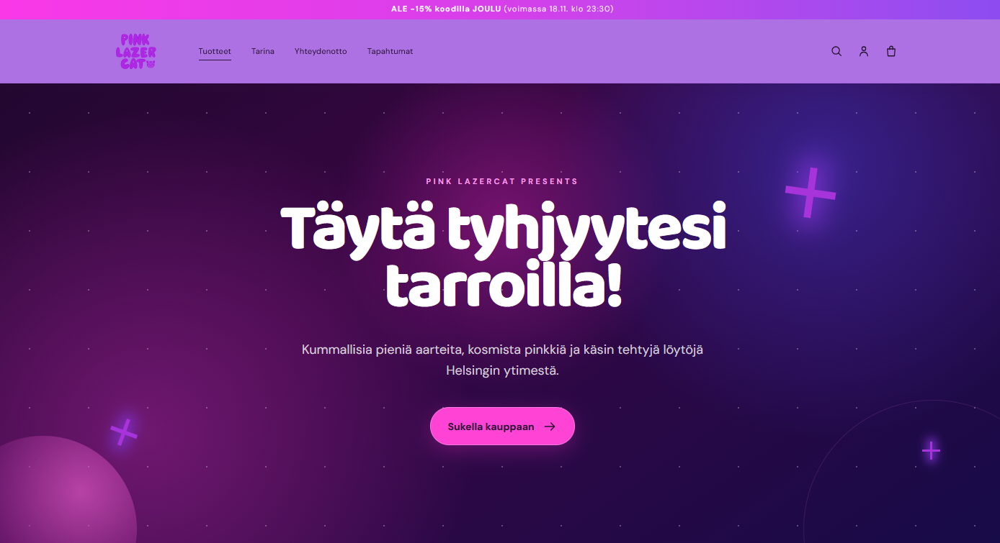

Develop & Deliver
Prototype
The part of the service we designed, and what we learned from it.
What we prototyped
We built the prototype from two sources: what our own team noticed on the PinkLazerCat site, and what our buyer persona noticed when she looked at it. The biggest change is the navigation bar. The original one took up too much of the screen, so we made it smaller, and that made the site much easier to use.
What we changed
- A smaller navigation bar. It now leaves more space for the content.
- No “Custom orders” button. The entrepreneur does not make custom orders, so the button was not needed.
- A calmer front page. The original front page was hard to use, so the prototype is more restrained and easier to follow.
- Smaller elements and headings. A single heading no longer takes up so much space.
- A better contact form and events page. Both were reworked to be nicer to use.
Original in Finnish
Tehtiin prototyyppi sen perusteella mitä itse havaittiin sekä havainnoilla mitä koehenkilö/userpersona havaitsi. Navbar muokattiin pienemmäksi, koska alkuperäisen sivun navbar vei liikaa tilaa nettisivuilta. Tämä helpotti käytettävyyttä huomattavasti. Navbarista poistettiin myös ”tilaustyöt” button, koska yrittäjä ei tee tilaustöitä, joten ”button” oli turha. Alkuperäisellä sivulla etusivun ulkoasu oli vaikeasti käytettävä, joten prototyyppiin siitä tuli hillitympi ja helpommin käytettävä. Elementtien koot ja otsikot muutettiin pienemmäksi, ettei yksi otsikko vie niin paljoa tilaa. Yhteydenottolomake ja tapahtumasivu muokattiin myös mielekkäämmäksi käyttää.

Source: our Figma prototype
What we learned
A responsive website matters. When elements such as image cards are too large, the site becomes much harder to use, so every element needs to scale well to the screen it is shown on.
Finnish version
Opimme, että verkkosivujen responsiivisuus on tärkeää. Kun elementit, kuten kuvakortit, ovat liian suuria, sivuston käytettävyys heikkenee huomattavasti, joten jokaisen elementin on skaalauduttava hyvin sille näytölle, jolla sitä katsotaan.
Next steps
- Go through the site again to check whether we missed anything.
- Declutter the front page by moving content off it and sorting it properly with tags and labels, so that products are filtered and categorised clearly. This would also help the search function.
Finnish version
Käymme sivuston vielä uudelleen läpi ja tarkistamme, jäikö jokin huomaamatta. Selkeytämme etusivua siirtämällä sisältöä pois siltä ja lajittelemalla sen kunnolla tunnisteiden ja luokkien avulla, jolloin tuotteet voi suodattaa ja luokitella selkeästi. Tämä helpottaisi myös hakutoimintoa.